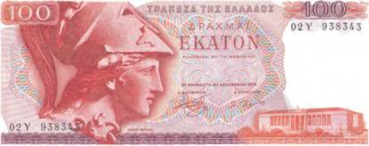
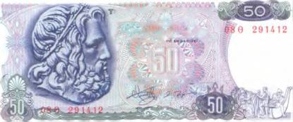
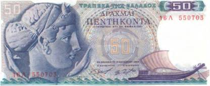

Тайны бумажных денег : Пропавший флот Александра

В длинном списке версий о появлении первых европейцев в Америке есть и совсем уж удивительные. Одна из них гласит, что Южная Америка была открыта еще в античные времена, задолго до Рождества Христова. И не кем-нибудь, а воинами Александра Македонского! Спрашивается, на каком основании был сделан этот вывод? Оказывается, среди многочисленных древних изображений, открытых учеными в Перу, встречаются и такие, на которых показаны бородатые воины европейского вида (надо сказать, что коренные жители Америки не имели ни бороды, ни усов). При этом они были вооружены короткими обоюдоострыми мечами, которыми воевали древние греки, а на головах у них надеты типичные греческие шлемы под стать тому, что украсил голову богини Афины на банкноте в 100 драхм 1978 г. (рис. 76).

Но как воины Александра Великого вообще могли попасть в ту часть света? А главное — зачем? Одно дело воевать с персами на Ближнем Востоке, в относительной близости от границ известного им мира [20], и совсем другое — отправляться неизвестно куда. К тому же без видимой цели и надежды на возвращение. И все-таки версия эта не такая уж и безнадежная…
В 323 г. до н. э. в Вавилоне скончался молодой еще царь греков Александр III Македонский — величайший полководец всех времен и народов. Со смертью этой легендарной личности начался развал огромной империи, растянувшейся от скалистых берегов Греции до восточных притоков Инда. А вместе с ним была навсегда похоронена мечта о едином государстве, в котором бы все народы жили в мире и считали друг друга братьями. Тело Александра еще не успело остыть, а его генералы (диадохи) уже начали жестокую борьбу за огромное и далеко не простое наследство. Кто-то был убит, а кто-то не только выжил, но и оторвал от жирного пирога свой кусок. Так, одному из диад охов достался Египет, где он основал династию греко-египетских правителей и стал ее первым фараоном, Птолемеем I. Другой полководец Александра прибрал к рукам часть Персии, провозгласив государство Селевкидов, и сделался царем Селевком I Никатором. А вот диадоху Неарху в наследство от Александра перепал мощнейший в истории человечества флот. Он состоял из… тысячи кораблей! Такое невероятно огромное количество судов понадобилось македонянину, чтобы воевать с Индией и Аравией. Начало строительству флота было положено во время индийского похода Александра Македонского, и после трудной победы над царем Пором часть его армии возвращалась в Персию по морю.

Как строились корабли в древности, можно увидеть на боне в 50 драхм 1978 г. (рис. 77).
Правда, на помещенной в правом нижнем углу банкноты сцене в роли корабелов выступают древнегреческие боги. К примеру, устройством парусов там занята сама Афина.

Известно, что Неарх участвовал в первых заседаниях диадохов, на которых велись споры о том, кто должен унаследовать престол. Но затем он внезапно куда-то исчез… А вместе с ним пропал и весь флот Александра! Судьба Неарха и его моряков остается тайной и сегодня. Никто не знает, что с ними произошло и в каком направлении отплыли многочисленные корабли греков. Так что вполне могло случиться, что кто-то из этих смельчаков в конце концов добрался и до берегов Южной Америки, где впоследствии была рождена легенда о бородатых пришельцах из-за океана. Изображение древнегреческого судна времен Александра Македонского украсило бону в 50 драхм 1964 г. (рис. 78).